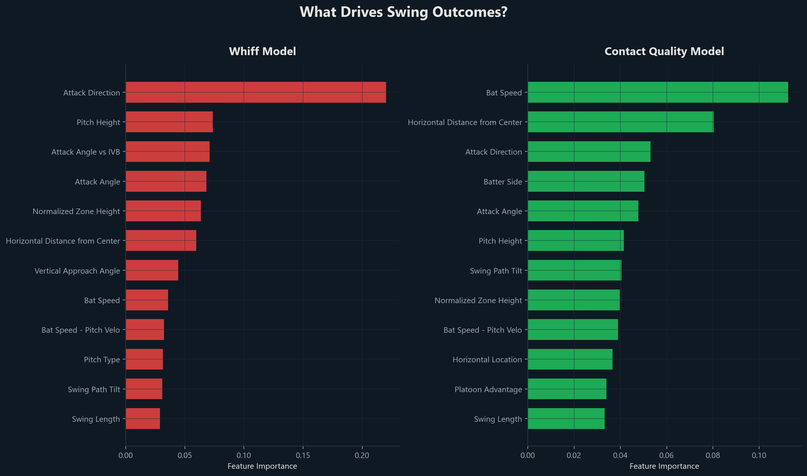
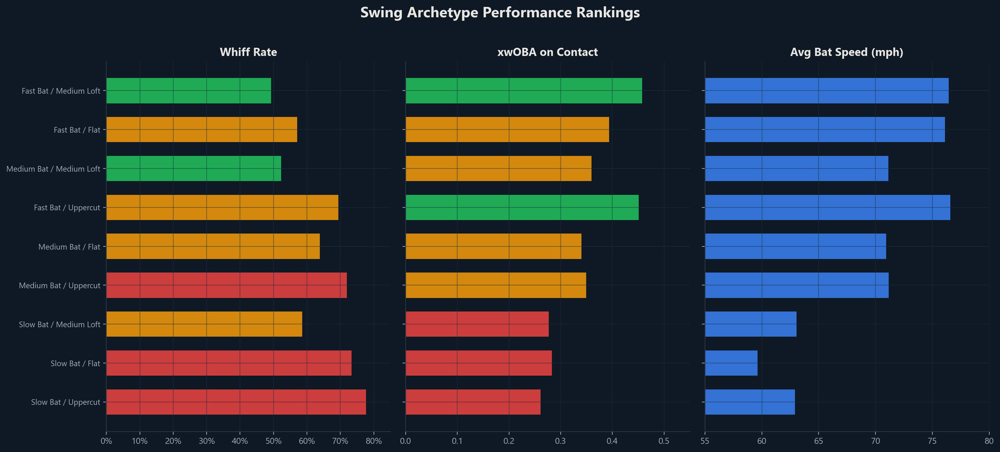
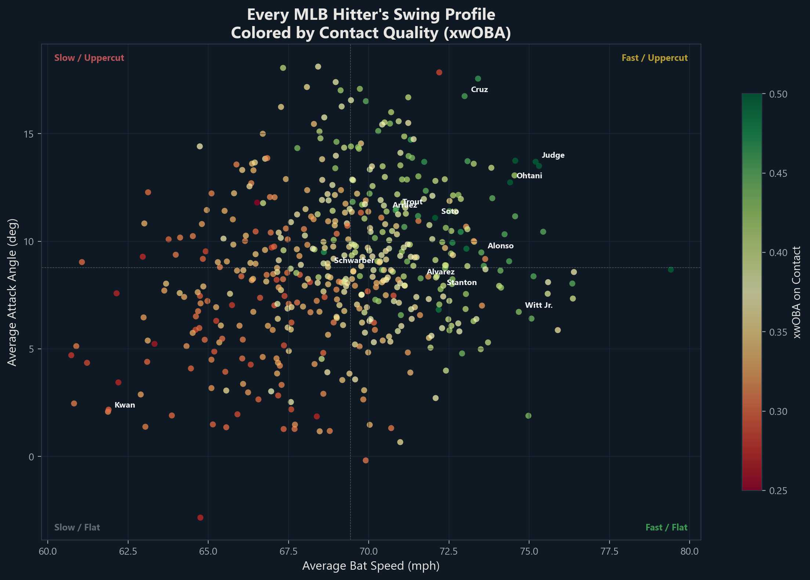
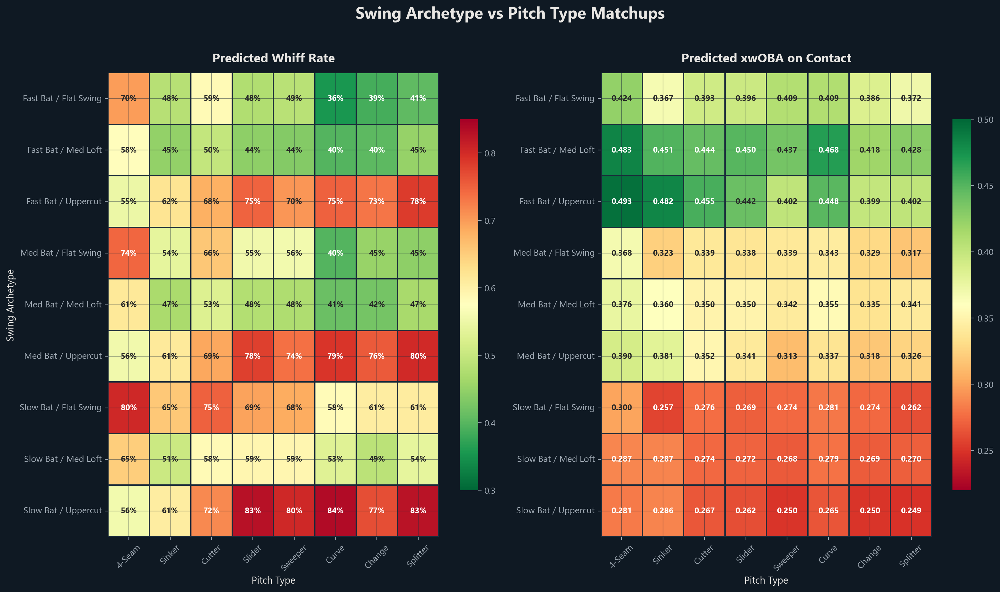
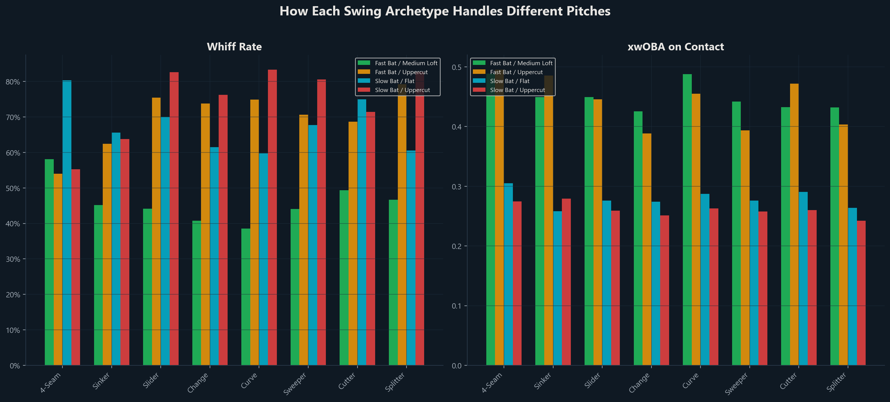
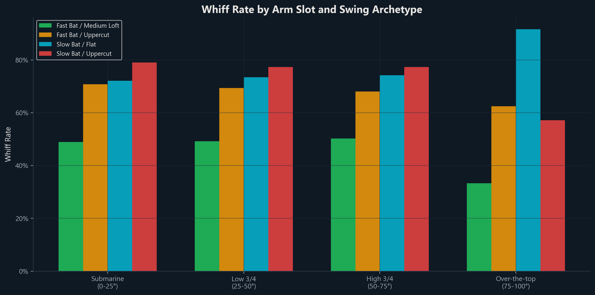

Which Swings Beat
Which Pitches?
Baseball’s bat-tracking era has given us an unprecedented window into how hitters actually swing the bat. We know bat speed. We know attack angle. We know swing length and swing-path tilt. And we’ve had Statcast pitch data – velocity, movement, arm angle, spin – for years.
But the two datasets are rarely combined. Pitch data lives in the pitcher’s world. Swing data lives in the hitter’s world. The question nobody is really answering is: how do specific swing profiles interact with specific pitch profiles to produce outcomes?
We built a model to find out.
The Idea
Every swing-pitch matchup is an interaction. A steep uppercut swing might crush a flat four-seam fastball but whiff badly on a diving splitter. A short, flat swing might spray line drives off sliders but struggle to lift sinkers. These aren’t random – they’re mechanical matchups, and they should be predictable.
We trained two XGBoost models on 661,640 swings from the 2024-2025 MLB seasons:
- Whiff Model – predicts the probability of a swing-and-miss given the pitch shape and swing characteristics (AUC: 0.81)
- Contact Quality Model – predicts expected wOBA on balls in play given the same features
Both models take the same inputs: everything about the pitch (type, velocity, spin, movement, arm angle, location) and everything about the swing (bat speed, attack angle, swing length, swing-path tilt, attack direction).
What Drives Swing Outcomes?
Before looking at matchups, we need to understand what matters most. The feature importance charts tell a clear story.

For whiffs, the single most important feature is attack direction – the horizontal angle of the bat path through the zone. This makes intuitive sense: a bat moving in the wrong direction relative to the pitch has almost no chance of making contact. Pitch height, the mismatch between attack angle and induced vertical break, and attack angle itself round out the top four. These are all geometry features. Whether you miss depends mostly on whether your swing plane can physically intersect the ball’s path.
For contact quality, it’s a different story. Bat speed dominates – when you do make contact, how hard you hit it depends on how fast the bat is moving. Horizontal distance from center (edge of the zone vs. middle) is second, because pitches on the black produce weaker contact regardless of swing type. Attack direction and batter handedness also matter, reflecting the importance of pulling the ball or driving it to the right field.
Swing Archetypes
To make this actionable, we classified every swing into archetypes based on two dimensions: bat speed (slow/medium/fast) and attack angle (flat/medium loft/uppercut), creating a 3x3 grid of nine swing profiles.

The rankings are stark:
- Fast Bat / Medium Loft is the best overall swing profile – lowest whiff rate among fast-bat hitters (49%) and the highest contact quality (.444 xwOBA). This is the Goldilocks swing: enough loft to drive the ball, enough speed to punish mistakes, and a swing plane that covers the zone well.
- Fast Bat / Uppercut produces elite damage when it connects (.460+ xwOBA) but comes with a 69% whiff rate. High-risk, high-reward.
- Slow Bat / Uppercut is the worst archetype across the board – 78% whiff rate and just .236 xwOBA on contact. A long, slow, steep swing is the worst combination in baseball.
Real Players
This isn’t just abstract math. These archetypes map directly to real hitters.

Fast Bat / Medium Loft (the ideal profile): Yordan Alvarez (75.1 mph bat speed, 8.4° attack angle, .455 xwOBA), Oneil Cruz (76.3 / 8.0° / .453), Pete Alonso (73.5 / 9.5° / .448), and Giancarlo Stanton (79.4 / 8.7° / .503 – the fastest bat in the dataset). These hitters combine raw power with a swing plane that stays in the zone.
Fast Bat / Uppercut (power at a price): Aaron Judge (75.2 / 13.7° / .601 xwOBA on contact – the best in baseball), Shohei Ohtani (74.4 / 12.7° / .557), Juan Soto (72.1 / 11.1° / .508), Kyle Schwarber (74.6 / 13.7° / .505). When these guys connect, it’s a different sport. But the 66-68% whiff rates are the cost of doing business.
Fast Bat / Flat (contact-first power): Bobby Witt Jr. (72.9 / 4.8° / .441), Vladimir Guerrero Jr. (75.0 / 1.9° / .434), Julio Rodriguez (74.7 / 6.7° / .433), Mike Trout (72.2 / 6.8° / .486). These hitters have elite bat speed but flatter swing paths, producing line drives and hard ground balls rather than towering fly balls.
Slow Bat / Flat (contact over power): Luis Arraez (60.9 / 5.1° / .310), Steven Kwan (61.9 / 2.1° / .315), Nico Hoerner (66.7 / 4.6° / .322). Pure contact hitters. They don’t miss much, but they also don’t hit the ball very hard.
Slow Bat / Uppercut (the worst matchups): Austin Hedges (66.5 / 11.8° / .243), Mark Canha (66.5 / 10.5° / .300). A steep swing without the bat speed to catch up to pitches is a recipe for weak contact and lots of whiffs.
The Matchup Matrix
Here’s the core output: how each swing archetype performs against each pitch type.

The heatmaps reveal several clear patterns:
Curveballs and changeups are the most hittable pitches for fast-bat hitters. Fast Bat / Medium Loft profiles whiff on just 38-40% of curveballs and changeups, compared to 48-58% on fastballs. And when they make contact, the damage is enormous – .468 xwOBA on curveballs, .386 on changeups. Slower pitch speeds give fast-bat hitters more time to adjust.
Fastballs produce the highest contact quality but also high whiff rates. Four-seamers against Fast Bat / Uppercut hitters yield .493 xwOBA on contact – the highest single cell on the board. But the whiff rate is 55%. The pitch is coming in too fast and too flat for the steep swing to consistently catch, but when it does, the combined pitch speed and bat speed create absolute destruction.
Splitters and sweepers are universal swing-missers. Every archetype struggles with splitters (FS) and sweepers (ST). Even the best-performing archetype (Fast Bat / Medium Loft) still whiffs on 41% of splitters. The late, sharp movement of these pitches defeats swing geometry regardless of bat speed.
Slow-bat hitters can’t hit anything. The entire bottom-right of the xwOBA heatmap is red. Slow Bat / Uppercut profiles produce .249-.262 xwOBA across all pitch types. There is no pitch that this archetype handles well.
How Pitches Look to Different Swings

The grouped bar chart makes the archetype gap even clearer. Fast Bat / Medium Loft hitters (green) have the lowest whiff rate against every single pitch type. They’re especially dominant against curveballs, where their 39% whiff rate is 20+ percentage points lower than Slow Bat / Uppercut hitters.
On the contact quality side, the gap is even wider. Fast Bat / Medium Loft hitters produce .45+ xwOBA against fastballs, sinkers, and curveballs. Slow Bat / Uppercut hitters barely crack .280 against any pitch.
The Arm Angle Factor
Pitcher arm slot creates interesting matchup asymmetries.

The standout finding: over-the-top pitchers (75-100° arm angle) are dramatically easier for flat-swing, fast-bat hitters. Fast Bat / Medium Loft hitters whiff on just 34% of pitches from extreme over-the-top arms, compared to 50% from submarine angles. The explanation is geometric – an over-the-top delivery creates a steeper vertical approach angle, and a flatter swing path naturally matches that plane better.
Meanwhile, Slow Bat / Flat hitters spike to a 90%+ whiff rate against over-the-top arms. Without the bat speed to catch up, the steep downward trajectory exploits the flat swing plane.
Submarine and sidearm pitchers (0-25°) are more equitable – all archetypes struggle more against low-slot pitchers because the horizontal release point creates unusual pitch trajectories that don’t match conventional swing planes.
Practical Takeaways
1. Bat speed is king, but swing plane is queen. If you can only optimize one thing, make the bat faster. But among hitters with similar bat speed, the attack angle separates elite performers from average ones. Medium loft (8-10°) is the sweet spot.
2. The “launch angle revolution” has a ceiling. Extreme uppercut swings (13°+ attack angle) produce incredible exit velocities on contact but dramatically increase whiff rates. Judge and Ohtani make it work because they have elite bat speed to compensate. Without that bat speed, an uppercut is just a long swing that misses a lot.
3. Pitchers should attack swing weaknesses, not just hitter weaknesses. A hitter with a steep uppercut is vulnerable to splitters and sweepers regardless of whether he’s a “good hitter” overall. A flat-swinging contact hitter can be exploited with over-the-top fastballs up in the zone. The matchup matters more than the overall stat line.
4. Curveball usage against elite bat-speed hitters is risky. Our model shows curveballs are the most hittable pitch type for fast-bat hitters. The slower speed gives them more time to adjust, and the arc of the pitch brings it into the zone in a way that matches a lofted swing. Pitchers facing high-bat-speed lineups should lean on splitters and sweepers instead.
5. The “just put the ball in play” approach has limits. Contact-oriented hitters like Arraez and Kwan avoid whiffs, but their contact quality is significantly lower (.310-.322 xwOBA) than power-profile hitters who connect (.440-.601 xwOBA). In a game increasingly built around run prevention, the gap between “making contact” and “making hard contact” is widening.
Methodology
This analysis uses two XGBoost gradient-boosted tree models trained on 661,640 swings from the 2024-2025 MLB seasons (all pitches where Statcast bat-tracking data was available).
Features (27 total): - Pitch shape: velocity, spin rate, horizontal break, induced vertical break, arm angle, extension, spin axis, vertical approach angle, horizontal approach angle - Pitch location: plate_x, plate_z, normalized zone height, absolute horizontal distance from center - Swing mechanics: bat speed, swing length, attack angle, attack direction, swing-path tilt - Context: platoon indicator, batter side, pitcher hand, pitch type, count - Interactions: bat speed minus pitch velocity, attack angle vs. IVB mismatch, swing tilt vs. spin axis alignment
Whiff Model: XGBoost classifier, 500 trees, max depth 6, AUC 0.81 on held-out test set.
Contact Quality Model: XGBoost regressor predicting xwOBA on balls in play, 500 trees, max depth 6, MAE 0.278. The lower R² (0.077) reflects that single-pitch xwOBA is inherently noisy – the model captures systematic patterns in swing-pitch interactions even though individual pitch outcomes have high variance.
Swing archetypes are defined by terciles of bat speed and attack angle across all swings in the dataset. “Fast” = top third of bat speed (>70.5 mph), “Slow” = bottom third (<68.1 mph). “Uppercut” = top third of attack angle (>10.2°), “Flat” = bottom third (<7.6°).
All code, models, and data behind this analysis are part of the Basenerd analytics platform.